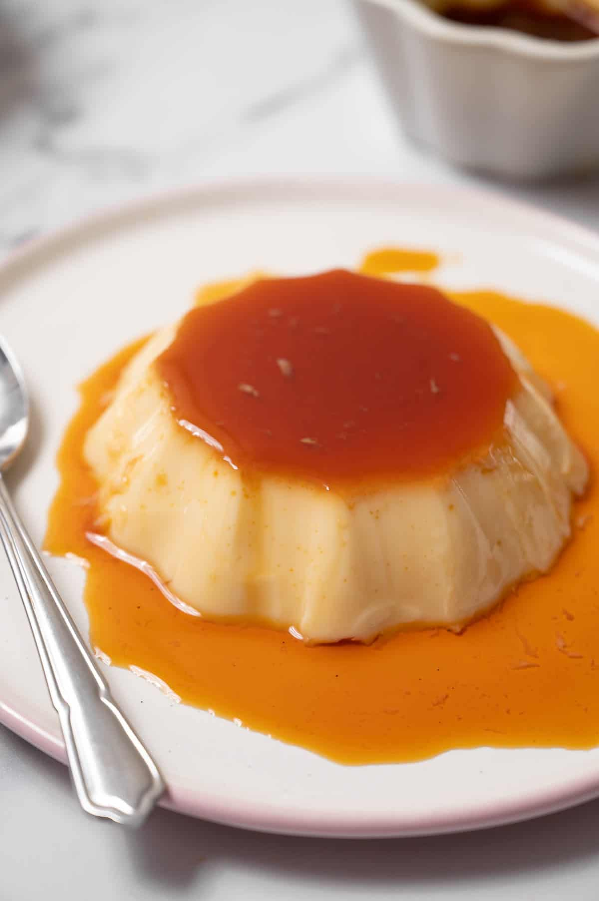

Dominican Flan Recipe
How to make a classic Dominican flan
ingredients:
- 1 cup of sugar
- 1 cup of sugar
- 1 table spoon of water
- 1 teaspoon of vanilla extract
- 1 and a half cup of condensed
- 1 and a half cup of evaporated milk
instructions
- Mix together the egg yolks, sweetened condensed milk, vanilla extract, and evaporated milk into a bowl.
- Stir all ingredients until they are all convined evenly the set it aside
- On sauce pan add the sugar and the water and on low heat mix both ingredients until a dark thick caramel forms then add the mixture into a mold
- Take the mixture you set aside earlier and carefully pour it on to of the caramel mixture in the mold